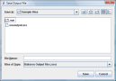

You can save the text displayed in the output box as a Statsres Results File which is essentially a text file of the output. Go to the menu bar and click File and then Save and then Output. On the dialog box, enter a file name and choose a location.